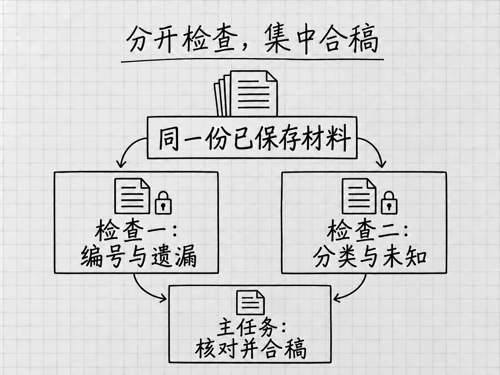

第18章 几件事怎样分开做：多个任务与子代理
有些工作必须先做完前一步，后一步才有依据：清单还没生成，就谈不上核对生成的文件。另一些工作可以同时进行，例如一边检查目录是否漏项，一边检查分类是否遵守规则。
分工有没有用，要看这些工作能不能独立推进。几个任务不断等待彼此，或者同时改同一个文件，开得越多，整理起来越费事。
先分清两种分工
一种是你自己开几个任务，分别交代目标，最后由你汇总。例如一个任务查资料，另一个任务改文章。这些任务各有自己的上下文，你需要把相关结果交给负责合稿的任务。
另一种是你在一个主任务里，明确要求Codex把独立部分交给子代理。子代理就是受主任务委派、承担某个具体工作的另一个代理。主任务负责解释总目标、分配范围和收回结果，再给出合并后的答复。
当前本地Codex会在用户明确要求，或适用的项目说明、技能明确要求时使用这种分工。桌面会呈现子代理任务活动，便于查看它做了什么；可用性以当前环境为准。子代理的入口与条件
从只读检查开始，更容易看清分工

图：两个检查各有范围，主任务对照依据汇总，不让多个代理同时改同一文件。
沿用第17章的「资料目录」。已经有了分类索引，我们可以从两个角度检查它：一边看12个编号有没有漏或重复，另一边看未定日期、可能重复条目和过时说明有没有按规则处理。
两个问题用的是同一套已保存的材料，谁也用不着等对方的结论，也都不改文件。可以在准备好的主任务里明确说：
请用两个子代理分别检查当前结果，都只读，不改文件。一个核对01至12的覆盖、重复和旧索引遗漏；另一个核对分类、日期与「补充决定」是否一致。每条问题指出编号、相关文件和依据。由主任务收回两份意见，解决冲突，给我一份去重后的问题清单；这轮先不修订成果。
这是本书自己设计的分工，其中没有固定的代理名称或菜单模板。当前环境没有提供子代理时，按同样两个角度依次检查，核对照样能做完。
看活动，更要看返回了什么
请求发出后，查看主任务呈现的代理活动，按可用入口打开对应任务，确认工作范围与最初分配一致。桌面使用自己的活动入口；终端教程里的/agent命令属于另一个入口。想引导或停下某个子代理，直接向主任务提出。
主任务汇总时，应该说清哪些问题已经有材料支持，哪些只是怀疑。「05名字含备份」只提示需要比较内容，凭这一点还不能删除05。一个代理建议合并，另一个指出规则要求保留，主任务就应回到「补充决定」把冲突处理掉，再把结论交给你。
几个代理都报告「结束了」，分工还没有完成。它们返回的信息要能被主任务使用：对象、发现、来源和限制都清楚，重复意见已合并，冲突已有解释。之后再决定是否进入修改。
改文件时，尽量有一个负责合稿的人
本例可以由主任务根据确认的问题统一修订，子代理继续只读检查。这样谁在改哪份文件很明确，也便于保存前后版本。
确实需要并行写入时，给每项工作不同的文件或独立目录，并指定谁负责最终合并。两个任务同时修改「分类索引.txt」，结果往往是彼此覆盖，或者在不同假设下改出互相不一致的内容。
有明显先后依赖的工作，适合串行。必须先确定分类标准，才能按这个标准生成索引；标准未定就分给几个代理分别生成，得到的多半是几份需要重做的稿件。
更多代理，也有更多成本
子代理各自进行模型和工具工作，通常比对应的单代理流程消耗更多token，还需要分配、解释和汇总。小问题花在这些协调环节上的时间，可能比直接做完还多。分工的用量与冲突说明
所以先问两个问题：这几件事能否独立完成？分开以后，结果是否容易合并？四件待办的一次状态更新不值得拆开；一组较长的材料需要分别找事实和核对结构，就比较合适。
第6章介绍过Ultra涉及更多分工。选了这个档位，任务边界仍然要由你说清。先决定要怎样分工，再根据实际可用能力安排档位。
多个AI意见相同，仍要回到证据
两个代理读的可能是同一份有错的材料，判断方式也相近。它们意见一致，说明这个地方值得检查；证据仍然只有材料本身那一份。真人试用和真实操作的结果，它们更替代不了。
本例的核对依据是那四份原始材料、已经确定的整理规则和实际输出。分工帮助我们从不同角度检查这些依据，最后的汇总仍由主任务负责。
每项工作的输入、范围、交付和合并方式都说得清，分工才有基础。说不清的时候，先在同一个任务里把问题理顺，通常更省事。